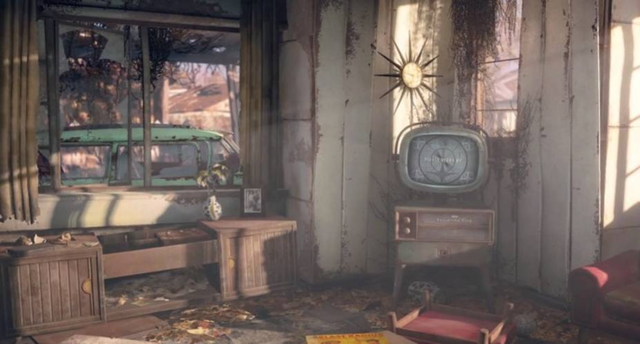

Desarrollo de Fallout 4
"Fallout 4", el cuarto título principal de la icónica serie de juegos de rol de Bethesda Game Studios, es una obra maestra que lleva a los jugadores a un viaje inolvidable a través de un mundo post-apocalíptico lleno de peligros, misterios y decisiones morales complejas. Pero detrás de esta experiencia épica hay un proceso de desarrollo igualmente fascinante que abarcó varios años y contó con el arduo trabajo de un talentoso equipo de desarrolladores.
Inicio de todo
El desarrollo de "Fallout 4" comenzó poco después del lanzamiento de su predecesor, "Fallout 3", en 2008. Desde el principio, el equipo de Bethesda se propuso crear un juego que superara las expectativas de los fanáticos de la serie y estableciera un nuevo estándar en el género de los juegos de rol de mundo abierto. Con esta visión en mente, el equipo se embarcó en un ambicioso proceso de desarrollo que abarcó múltiples aspectos, desde el diseño de juego hasta la narrativa y la tecnología.
En agosto de 2010, Todd Howard reveló en una entrevista con Eurogamer que Bethesda estaba trabajando en dos proyectos; uno estuvo en desarrollo por dos años (justo tras salir Fallout 3), y el otro todavía estaba en preproducción. Se sabía que el título en desarrollo era The Elder Scrolls V: Skyrim, mientras que Fallout 4 era el que estaba en preproducción.
Creación de la narrativa
Por supuesto, ningún juego de "Fallout" estaría completo sin una narrativa rica y envolvente, y el equipo de escritores de Bethesda se esforzó por entregar una historia que estuviera a la altura de las expectativas de los fanáticos. Con "Fallout 4", se propusieron crear una historia épica de redención, venganza y supervivencia en un mundo marcado por la desolación y la desesperación. A medida que los jugadores se sumergen en la historia del Único Superviviente y su búsqueda desesperada para encontrar a su hijo perdido, son testigos de una narrativa llena de giros inesperados, personajes memorables y dilemas morales complejos.
Uno de los aspectos más destacados del desarrollo de "Fallout 4" fue la creación del mundo del juego. El equipo de diseño pasó incontables horas imaginando y dando vida a un Boston post-apocalíptico, lleno de ruinas, paisajes desolados y criaturas mutantes. Inspirados por la rica historia y la arquitectura distintiva de la ciudad, los desarrolladores recrearon meticulosamente lugares emblemáticos como Fenway Park y el Freedom Trail, infundiéndolos con un aire de decadencia y desesperación que capturó la esencia del mundo de "Fallout".
Jugabilidad y Detalles
Otro aspecto clave del desarrollo fue la evolución del sistema de juego. "Fallout 4" introdujo varias mejoras significativas en comparación con entregas anteriores de la serie, incluyendo un sistema de construcción de asentamientos, un refinado sistema de combate y un extenso árbol de habilidades que permitía a los jugadores personalizar completamente a su personaje. Estas adiciones no sólo enriquecieron la jugabilidad, sino que también ofrecieron a los jugadores una mayor libertad y flexibilidad para explorar el mundo y abordar los desafíos de la manera que prefirieron.
Además del trabajo en el juego en sí, el desarrollo de "Fallout 4" también estuvo marcado por una intensa atención al detalle y una dedicación a la calidad en todas las áreas. Desde la creación de modelos de personajes y animaciones hasta la composición de música y efectos de sonido, cada aspecto del juego recibió un cuidado meticuloso para garantizar que cumpliera con los estándares de excelencia que los fanáticos de la serie esperaban.
A medida que el desarrollo de "Fallout 4" llegaba a su fase final, el equipo de Bethesda se enfrentó a la monumental tarea de pulir el juego y prepararlo para su lanzamiento. Se llevaron a cabo pruebas exhaustivas para identificar y corregir errores, se optimizó el rendimiento del juego en una variedad de plataformas y se realizaron ajustes finos en la jugabilidad y la narrativa para garantizar una experiencia de juego fluida y envolvente.
Finalmente el 2 de junio de 2015, se estableció un temporizador de cuenta regresiva en el sitio web de Fallout de Bethesda, que expiraría al día siguiente a las 10:00 a. m. (EDT). El 3 de junio, segundos antes de las 10:00 a. m. (EDT), se lanzó el tráiler de Fallout 4 en YouTube. El sitio web de Fallout también debutó en completo estilo de Fallout 4, incluyendo un número de teléfono teaser funcional, previamente utilizado durante el lanzamiento de Fallout 3.
La primera presentación de E3 de Bethesda tuvo lugar el 14 de junio de 2015, a las 7 p. m. PST. La presentación de E3 se transmitió en YouTube y Twitch. Bethesda reveló imágenes de juego que incluían combate, un sistema VATS refinado, un nuevo sistema de elaboración, arte conceptual y una fecha de lanzamiento, que se confirmó que sería el 10 de noviembre de 2015. Una nueva característica importante mostrada durante la conferencia de prensa fue la capacidad de crear y desmontar asentamientos.